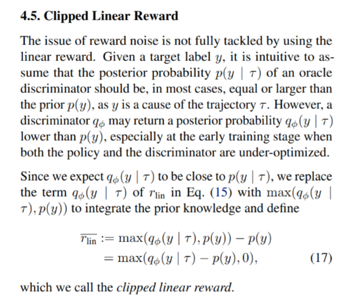
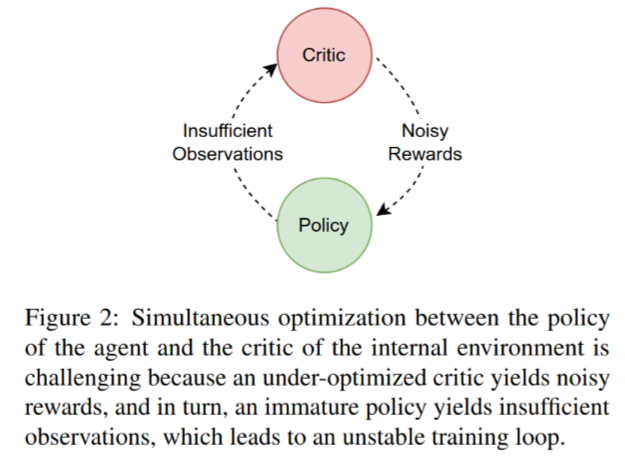
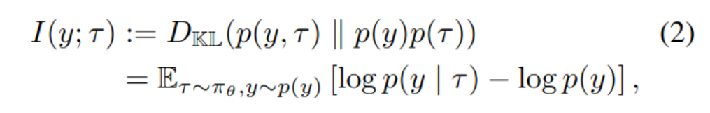

[TOC]
- Title: Internally Rewarded Reinforcement Learning
- Author: Mengdi Li et. al.
- Publish Year: 2023 PMLR
- Review Date: Wed, May 8, 2024
- url: https://proceedings.mlr.press/v202/li23ax.html
Summary of paper
Motivation
- the author studied a class o RL problem where the reward signals for policy learning are generated by a discriminator that is dependent on and jointly optimized with the policy (parallel training on both the policy and the reward model)
- this leads to an unstable learning process because reward signals from an immature discriminator are noisy and impede policy learning , and conversely, an under-optimized policy impedes discriminator learning
- we call this learning setting Internally Rewarded RL (IRRL) as the reward is not provided directly by the environment but internally by the discriminator.
Contribution
- proposed the clipped linear reward function. Results show that the proposed reward function can consistently stabilize the training process by reducing the impact of reward noise, which leads to faster convergence and higher performance.
- we formulate a class of RL problems as IRRL, and formulate the inherent issues of noisy rewards that leads to an unstable training loop in IRRL
- we empirically characterize the noise in the discriminator and derive the effect of the reward function in reducing the bias of the estimated reward and the variance of reward noise from an underdeveloped discriminator
- Comment: the author tried to express the bias and variance of reward noises in Taylor approximation
- propose clipped linear reward function
Some key terms
Simultaneous optimization causes suboptimal training
AIM
- in this work, we seek to solve this issue by reducing the impact of reward noise, which is challenging due to the unavailability of an oracle discriminator whose posterior probability can reflect the information sufficiency for discrimination.
Define discriminator
$\tau \in (\mathcal S \times \mathcal A)^n$ ($n \in \mathbb N$ is the trajectory length)
the discriminator $q_\phi(y \mid \tau)$ computes the probability of label $y$ being the cause of trajectory $\tau$.
- it is because $y$ is not accessible to the agent during policy training, thus we measure the alignment the goal $y$ with the collected $\tau$ .
Hard Attention example is one instance of IRRL

- I think Actor Critic is somehow similar to this scenario but the author did not mention it….
Mutual Information maximization
from deir paper:

from this paper:
in this equation, $p(y\mid \tau)$ is the oracle posterior probability that reflects the information sufficiency of observation ($\tau$) for discrimination. It can be interpreted as being generated by an oracle discriminator, a conceptual term utilized for the theoretical formulation.
Extend this mutual information to reward design and policy training

discriminator training
The standard cross-entropy loss for training a classifier would be: $$ \mathbb{E}{\tau \sim \pi{\theta}, y \sim p(y)} \left[ p(y \mid \tau) \log q_{\phi}(y \mid \tau) \right], $$ but we drop $ p(y \mid \tau) $ by assuming it to be 1
why:
- The simplification to drop $ p(y \mid \tau) $ implicitly assumes that for every trajectory $ \tau $, there is a direct, deterministic relationship to a label $ y $. This is equivalent to assuming $ p(y \mid \tau) = 1 $ for the sampled $ y $ and $ \tau $. In practice, this means assuming that the trajectory $ \tau $ contains all necessary information to unequivocally determine $ y $.
- then it means that we do not care about uncertainty
Reward hacking = current LRM setting where the language reward model is trained beforehand
see the paper for more details
Generalized Reward and increasing function


INTUITION: if we make g as linear, we have these nth derivative in Taylor approximation of the reward noise becomes 0,

CLIPPED

Results

Summary
- think about reward noise, think about Taylor approximation of the reward noise representation, and then make it Linear to reduce the noise!
Potential future work
go check our theory to see if we can make it linear?
not really applicable to rewards signals that do not consider “log” but pure $p(y\mid \tau)$
but it contains a further $p(y)$, so maybe we can use this clipped reward signal $max(p(y \mid \tau) - p(y), 0)$ to compare with the pure $p(y \mid r)$